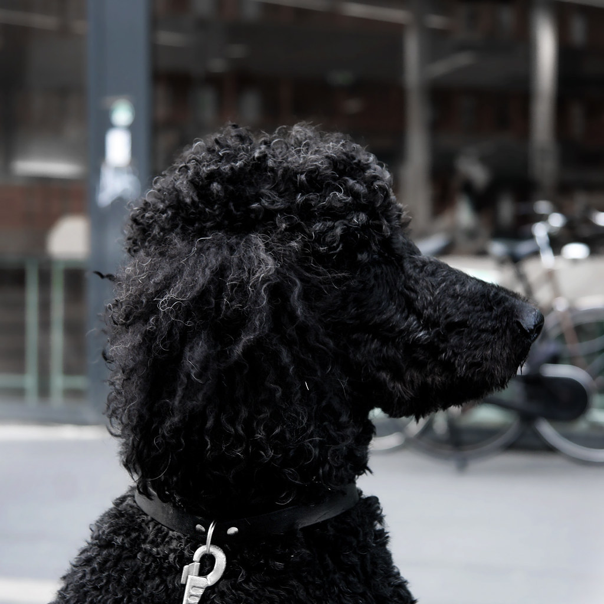

Golden Retriever
The Golden Retriever is a friendly and sensitive dog. Orignally bred to help hunters, this breed is very loyal and quite intelligent. Goldens are fantastic family dogs that can also serve as emotional support and service animals.
Black Labrador Retriever
The Labrador Retriver was origninally bred for work: helping out fishermen haul nets in the icy cold. Now, they are mostly known for being family dogs like the Golden Retriever. They are friendly and easy to train, and are great with children.
German Shepard
These dogs excel at any task that they are trained to do. Amazingly smart and loyal, German Shepards are trusted all over the world for helping the handicapped, assisting in search and rescue, and herding. These lovable pups are also great around the family as well.

Poodle
These fluffy creatures are some of the smartest dogs on Earth. It's no wonder they are famous for their showmanship, often bringing home the blue ribbon at dog shows. Behind the theatrics, however, lies a fiercly loyal pooch.